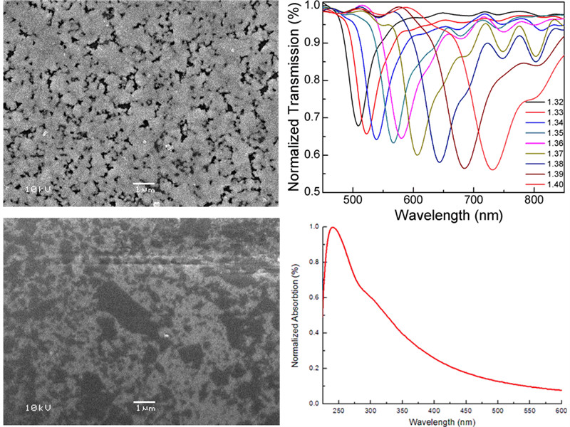
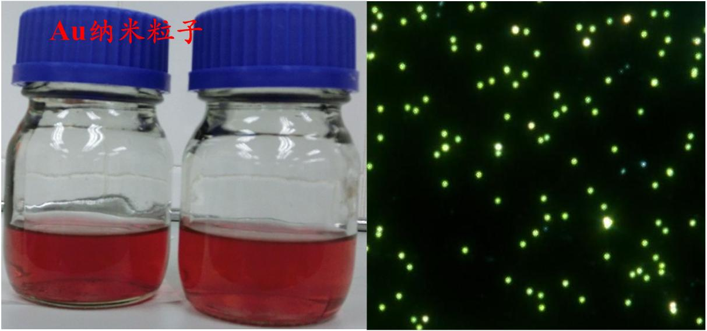
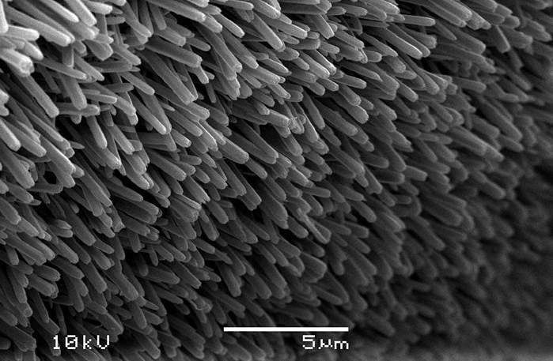

表面等离激元共振(SPR)技术作为一种高灵敏度、无标记的检测技术，已在环境监测、食品安全、药物筛查、生物学及生物医学等领域广为应用。基于光纤的SPR传感检测技术由于具有如下优点如：实时在线监测、所需检测样品用量小、传感器尺寸精巧、成本低廉等优势已成为近年来的研究热点。本方向研究在各种新型光纤结构（如D型光纤、拉锥光纤、光子晶体光纤、悬芯光纤、光纤光栅）上通过热蒸镀、溅射、化学镀及分子自组装技术淀积不同的功能薄膜，制作出高灵敏度、快速响应的光纤SPR传感器，并实现相应的生化检测。

功能薄膜光纤SPR传感技术

金属纳米结构光纤LSPR传感技术
基于金属微纳结构的局域表面等离激元共振(LSPR)是一种高灵敏度、快速、无标记、集成光学检测技术。本方向研究光纤LSPR生物传感器及检测系统构建核心技术；探索光纤LSPR线宽压缩、谱峰调控新方法及发展光纤LSPR生物传感应用重要方法。

光纤ZnO纳米线传感技术
ZnO纳米线具有优异的电学、光学、气敏等特性，可用于超灵敏度多组分气体、湿度检测。本方向研究光纤ZnO纳米线生化传感系统构建方法和超灵敏度气体、湿度检测的关键技术，发展基于光纤的ZnO纳米线生长实时监测技术；探索单根ZnO纳米线光栅的写入方法。

功能材料填充光纤传感器
光子晶体光纤（PCF) 在高灵敏度传感领域的应用日益广泛，与传统光纤相比其具有诸多无法比拟的优异特性：（1）多孔特性， 通过不同空气孔的填充可实现PCF不同的光学特性；（2）高双折射特性 ，易于通过改变纤芯或包层结构制作光纤偏振器件；（3）灵活的结构特性，通过设计纤芯或包层空气孔的形状和排布获得不同光学性能的PCF。目前，我们的研究内容包括光子晶体光纤光栅传感器、光子晶体光纤F-P传感器、基于填充的光子晶体光纤传感器等。